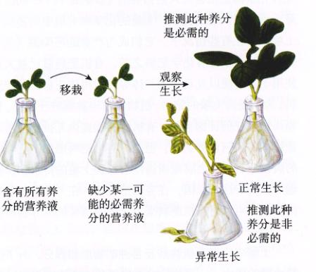
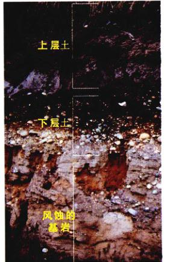
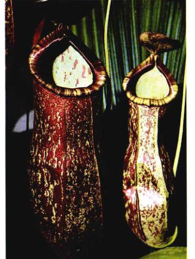
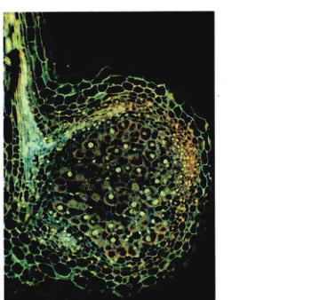
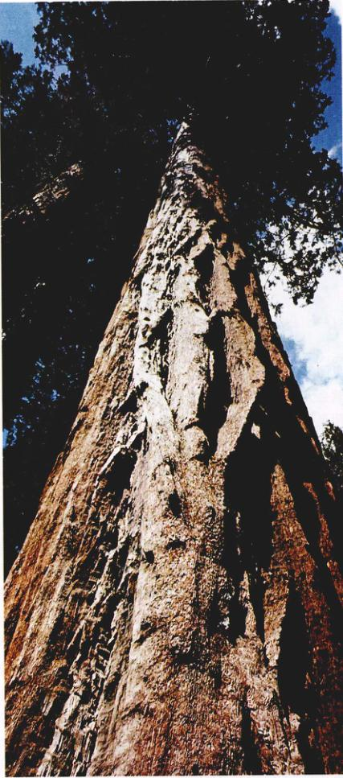
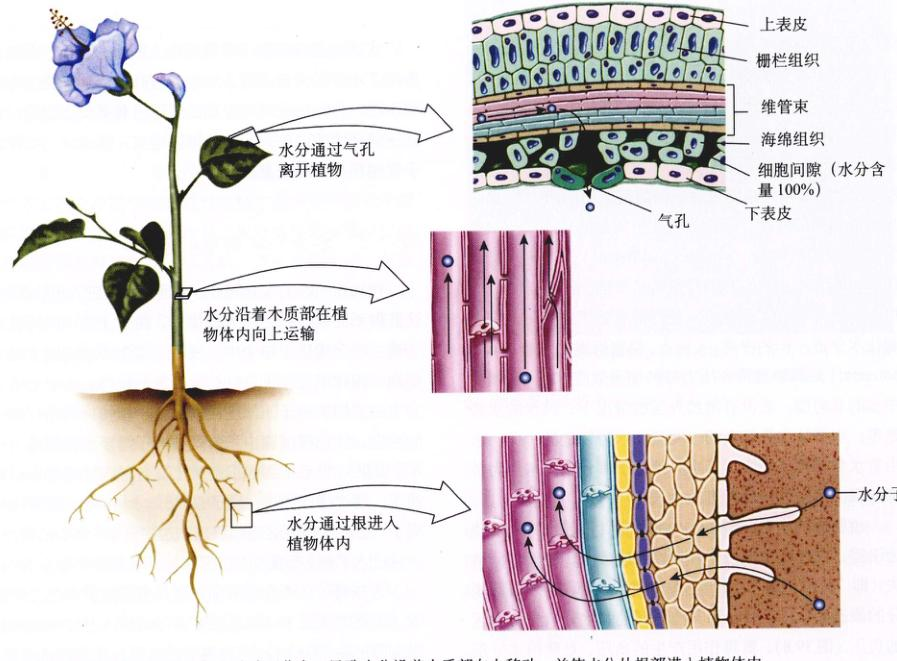
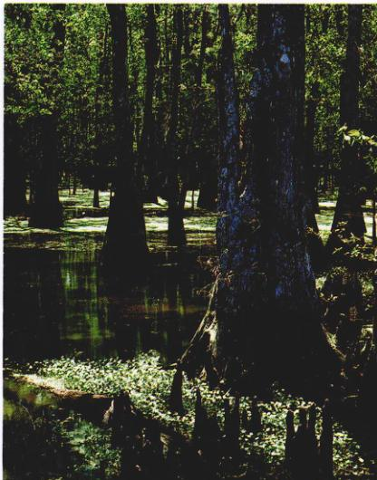
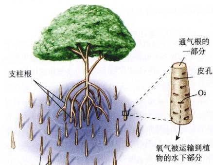
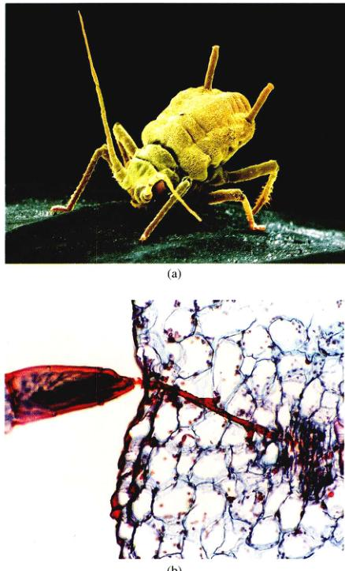

图 39.1 食虫植物 大多数的植物都从土壤中吸收水分和必需的养分，但是食虫植物可以从一些小动物中直接获得一些养分。
如我们在第38章中提到的那样，植物在不断地生长着，这一过程需要大量的能量。在这一章中，我们将阐述以下两个问题：①除了从太阳获取的能量外，植物还需要哪些物质才能维持生存；②这些生命的必要元素在植物体各组成部分间是如何分配的。
和动物一样，植物也需要各种各样的养分来维持生存并保持健康。缺少任何一种重要的养分，都会使植物生长缓慢，或者使植物更易感染疾病或死亡。植物从土壤中以及利用光合作用来获取这些养分。当然，有些植物采取了一些更加直接的途径（图 39.1）。叶中产生的糖类将被运输到植物体的各个部分，而从土壤中吸收的水分和矿物质，则被向上运输到叶及植物的其他部位。我们在第38章中已经提到过，这两类运输都是由一些特殊的组织完成的，即木质部和韧皮部。
* 原书中将此节漏了，现予补充。校者注。
利用太阳能将大气中的 CO₂ 转化成植物体内简单的糖类，是植物营养的主要来源。CO₂ 通过气孔（叶表面的开口）进入植物体内，而大气的成分之一——O₂，是光合作用的一种产物，它也通过气孔进入大气。O₂ 在细胞呼吸中将储存在糖类化学键中的能量释放出来，以满足植物生长和生活的需要。然而，CO₂ 以及光能并不足以合成植物所需的所有化合物。实际上，植物还需要许多无机营养养 (macronutrition)，有些则属于微量元素 (micronutrition)，极少的一点就可以满足植物的需要。大量元素共有9种：其中，碳、氢、氧和氮（氨基酸的必需成分）是几乎所有的有机化合物中都含有的元素。另外的5种是：钾、钙、磷、镁（叶绿素分子的中心）和硫。一株健康植物体中，这9种元素中任意1种的重量，都接近于其干重的 1%，而碳含量更是远远超过了这个数量。7种微量元素则是：铁、氯、铜、锰、锌、钼、硼。这些元素的含量，在大多数植物中从百万分之一到百万分之几百不等（表 39.1）。大量元素主要是在20世纪发现的，但微量元素的发现却要晚得多。因为缺乏处理和鉴定如此少量的样品的技术。
养分的需求是利用水培法进行分析的，即将植物的根培育在含有营养元素和空气的水中。所配的营养液含有比例适当的所有的必需营养元素，但有一些已知的养分，或一些尚未确定是否为植物所必需的养分，则被人为地除去。然后让植物就在这样一种环境中生长，通过研究植物所表现的异常症状，就能够弄清植物是否需要那种没被加入营养液中的元素（图 39.3）。然而，即使没有人为加入，所用的水或器皿中，通常会含有某些微量营养元素足能够使植物正常生长。为了理解植物对这些微量元素的需求量究竟可以少到什么程度，看看下面这个例子就能体会到了。在澳大利亚极度缺乏钼 (Mo) 的一公顷土地（边长 100 m，约 2.5 英亩）中，34 g 钼就足以维持所有植物长达十年的生长。大多数植物都可以在水培环境中正常地生长，这种方法虽然成本很高，有时也会用于商业生产。现在，利用分析化学的方法，提取植物体的成分，并测试其中各种分子的含量要简单得多。这一方法已被用于研究高浓度的 CO₂ 即温室效应对植物生长的影响。随着 CO₂ 浓度的提高，一些植物的叶片加大了，但是氮含量（相对于碳）却相对降低了。对草食动物而言，这意味着这些叶片的营养价值降低了。
| 元 素 | 主要吸收形式 | 占干重的百分比 | 主要功能举例 |
|---|---|---|---|
| 大量营养元素 | |||
| 碳 | CO₂ | 44 | 有机分子的主要组成物质 |
| 氧 | O₂, H₂O | 44 | 有机分子的主要组成物质 |
| 氢 | H₂O | 6 | 有机分子的主要组成物质 |
| 氮 | NO₃⁻, NH₄⁺ | 1 ~ 4 | 氨基酸、蛋白质、核苷酸、核酸、叶绿素、辅酶、酶的组成物质之一 |
| 钾 | K⁺ | 0.5 ~ 6 | 蛋白质合成，气孔的开闭 |
| 钙 | Ca²⁺ | 0.2 ~ 3.5 | 细胞壁的组成物质，维持膜结构及其通透性，激活一些酶 |
| 镁 | Mg²⁺ | 0.1 ~ 0.8 | 叶绿素分子的组成成分，激活很多酶 |
| 磷 | H₂PO₄⁻, HPO₄²⁻ | 0.1 ~ 0.8 | ADP、ATP、核酸、磷脂以及部分辅酶的组成成分 |
| 硫 | SO₄²⁻ | 0.05 ~ 1 | 一些氨基酸、蛋白质以及辅酶 A 的组成成分 |
| 微量营养元素 (以 ppm 为浓度单位) | |||
| 氯 | Cl⁻ | 100 ~ 10 000 | 渗透平衡和离子平衡 |
| 铁 | Fe²⁺, Fe³⁺ | 25 ~ 300 | 叶绿素的合成，细胞色素、固氮酶 |
| 锰 | Mn²⁺ | 15 ~ 800 | 一些酶的激活剂 |
| 锌 | Zn²⁺ | 15 ~ 100 | 很多酶的激活剂，在叶绿素的形成中起作用 |
| 硼 | BO₃⁻, B₄O₇²⁻ | 5 ~ 75 | 可能与糖的运输以及核酸的合成有关 |
| 铜 | Cu²⁺ | 4 ~ 30 | 一些酶的组成成分或激活剂 |
| 钼 | MoO₄²⁻ | 0.1 ~ 5 | 氮的固定，硝酸盐的还原 |
图 39.2 植物的矿物质缺乏症 (a) 番茄 (Lycopersicon esculentum) 植株的健康叶；(b) 缺氮植物的坏死叶（叶表面有一片片坏死的组织）；(c) 缺铜植株蓝绿色而卷曲的叶；(d) 缺锌植物具有的小坏死叶子。这些营养缺陷在农业栽培中的意义是显而易见的，一训练有素的人只要通过观察，能确定到底足缺乏什么元素。
图 39.3 植物所需营养物质的确定 幼苗首先生长在完全的营养液中，接下来将这株幼苗移栽到缺少某一种可能必需的营养液中。然后研究幼苗所出现的异常症状，如叶的褪色以及生长迟缓。如果幼苗生长正常，则这种养分对植物是非必需的，如果幼苗生长不正常，所缺的养分就是生长必需的。
植物的生长受到土壤成分的影响。土壤是高度风化的地壳。它由多种成分混合而成，包括沙、大小各异的石头、黏土、淤泥、腐殖质以及很多其他形式的矿物质和有机物质。土壤的孔隙含有水分，在土壤颗粒间还有空气。随着构成土壤的岩石种类的变化，土壤所含的矿物质比例也发生着变化。地壳中大约含有92种自然存在的元素；在表 2.1 中，列出了最常见的一些元素，以及它们在地壳中的质量百分含量。大多数的元素都以无机化合物的形式存在，这些化合物被称为矿物质 (mineral)；大多数的岩石都由几种不同的矿物质组成。土壤中还有很多微生物，它们分解有机残骸，使之循环再利用。在英格兰，每公顷麦田土壤的有机质里，储存了大约5吨的碳，这大约相当于100头羊的重量。
图 39.4 大多数的根都生长在上层土中 上层土是土壤的最上层部分称为上层土。上层土中含有根、小型动物、腐殖质等有机物以及大小不一的矿质颗粒。下层土位于上层土以下，含有较大的矿物质颗粒，其有机物质含量很低。下层土之下是基岩，它们是土壤的前身，常年的风化作用将其变成了土壤。
大多数的根都位于上层土 (topsoil) 中（图 39.4），上层土是由各种大小的矿物质颗粒（直径大多小于 2 mm）、活的有机体以及腐殖质 (humus) 混合而成的。腐殖质由部分腐烂的有机物质组成。由于侵蚀作用或保护不利而使土壤失去了上层土的话，土壤保水的能力和营养比例都会受到不利影响。土壤总体积中大约有一半是空隙和孔，因湿度条件不同而充满着水或空气。由于以下所述的特性，土壤中的一部分水分是无法被植物利用的。由于重力的作用，一部分水分一到达土壤处就会立刻流走。另一部分水分则储存在土壤内直径通常不到 50 μm 的空隙中。这些水分是可以被植物利用的。当这些水分由于蒸发、散失枯竭或被根吸收尽之后，若不向土壤中补充水分，植物就会枯萎并最终死。
在自然群落中，营养物质不断循环而供有机体利用。当这些群落被人工栽培的作物所取代后，这种情况将发生根本性的改变。土壤更易被侵蚀，养分流失的速度也将会加快。由于这一原因，栽种的农民以及园艺植物，通常需要额外提供矿质养分。
解决这一问题的途径之一是轮作 (crop rotation)。例如，一个农民可能今年在这块土地上种玉米，而第二年则改种大豆。两种植物都会从土壤中获取养分，但是两种植物所需的营养物质有所区别，因此在这两年中，土壤不会丢失同样的营养物质。大豆根部的根瘤内的固氮菌释放出的含氮化合物，甚至还能提高土壤的含氮量。有些时候，农民会让一块地休耕——这意味着在 1~2 年的时间内，他们将不在这块地上栽培任何农作物，这样，就可以利用一些自然过程来恢复土壤所储存的养分。
还有另外一些保持土壤肥力的耕作方法，如将留在地里的农作物埋进土壤中。你可以用相同的方法，将剪下的草或枯叶留在草坪或花园中，而土壤中的分解者就会完成剩下的工作——将这些植物残渣变成腐殖质。
施肥也是一种补充耕地中损失的养分的手段。最需工人为添加的肥料有：氮 (N)、磷 (P) 和钾 (K)。这几种元素都是植物所需的大量营养（参见表 39.1），同时也可能是土壤最易缺乏的元素。大量的化学和有机肥料施到了土壤中，在有些情况下，它们成为严重的污染源（参见第30章）。早在有化学肥料之前，有机肥料就已被大量使用了。粪便以及动物的尸体等物质用作庄稼的传统肥料。为了提高土壤的肥力，植物常也常被埋进土壤里。目前尚没有任何证据表明，有机肥料能提供无机肥料所无法提供的任何营养元素。但是，在有些情况下，在一年中，土壤中的腐殖质含量，而腐殖质通常会加强土壤的持水和保肥能力。由于这一原因，在有些情况下，在一年中的各个时间段内，可以用有机肥料来补充植物所需的营养物质。
有些植物能够像动物一样，从其他的有机体直接获取氮。这些食虫植物 (carnivorous plant) 通常生长在酸性土壤中，如缺乏有机氮的沼泽。这些植物直接捕获并消化小动物，从中获取足够的氮，这样它们就能在这些看似不利于植物生长的环境中生存下去。食虫植物的变态叶可以捕捉昆虫以及其他一些小动物（图 39.5）。植物利用体内各种腺体分泌的消化酶，将它们的猎物消化掉。
生长在南美洲及卡罗莱纳沿海沼泽中的捕蝇草 (Dionaea muscipula)，其叶片的两面上都长有3根敏感的毛。这些毛一被触动，就会刺激分成两半的叶片合拢（参见图 39.1）。当捕蝇草将一个猎物包进叶中之后，叶表面就会分泌出消化酶将猎物消化掉。这些捕蝇草叶片的开闭是受生长机制控制的，因此，它们开闭的次数是有限的。
毛膏菜 (Sundew) 叶片上有腺体状的毛状体，它不仅分泌黏液捕获小动物，而且还分泌消化酶。它们通常不会迅速闭合。捕蝇草和毛膏菜可能是共同的祖先。
猪笼草（又名瓶子草）(pitcher plant) 的叶子特化为壶状，壶内如花一样鲜艳，还有富含糖的分泌物，借此可吸引昆虫。昆虫一旦进入这些壶状的叶片就会滑到充满水和消化酶的“壶”底。
狸藻属 (Utricularia) 植物生活在水中，它利用弹簧样的暗门的快速运动将小动物扫进气囊状的叶中，接着就将它们消化掉。
图 39.5 食虫植物 这是一株生长在亚洲热带地区的猪笼草 (Nepenthes)。昆虫进入“壶”中被捕获并被消化掉。多种无脊椎动物和原生生物居住在这“壶”中。
植物需要氨 (NH₃) 来合成氨基酸，但是，大气中的氮大多以氮气 (N₂) 的形式存在。植物没有将氮气转化为氨所必需的生化途径（包括固氮酶在内）。但是有些细菌却有这样的能力，其中有些细菌与植物根的生长密切关联。其中的一部分最终“定居”在特别为它们构建的植物组织内，这样的组织称为根瘤 (nodule)（图 39.6）。豆科植物及其他的些植物能够形成根瘤，同时细菌与其宿主之间存在着一种特异的识别。细菌的寄生会消耗植物体的能量，但是在土壤中非常缺乏氮气的情况下，这样是很值得的。豆科植物进化出了一种节约能量的机制，那就是在氮浓度较高时，根毛将不会对细菌发出的信号产生反应。
图 39.6 固氮根瘤 被根瘤菌 (Rhizobium)（图中的黄色结构）侵染的紫花苜蓿的根毛照片。通过一系列化学信号的交换，植物细胞分裂产生一个根瘤，其中的固氮菌将空气中的氮气转化为氨。
虽然植物与固氮菌的共生关系并不普遍，但是植物与菌根真菌 (mycorrhizal fungi) 的共生关系却存在于大约 90% 的维管植物中。我们在已在第36章中详细介绍过这些真菌。认识这些有机体在增加植物吸收磷方面所发挥的重要作用，对于理解植物的营养非常重要。同时，这些真菌也提高了植物对某些微量元素的吸收。从功能上讲，菌根 (mycorrhizae) 实际上扩大了植物吸收养分的表面积。
前面所提到的很多数的营养物质和水，都通过根进入植物体内，并通过木质部向上运输。或许你常看见几十层楼那么高的大树（图 39.7），但你曾考虑过水是如何从根到达这些树顶端的吗？其实，水分先通过细胞原生质体间的空隙，再通过胞间连丝（细胞间的连接），穿过细胞膜，最后再通过木质部内连续的管状系统，实现向上的运输的。我们知道，在一株植物体中，有一个贯穿其始终的相互连接的运输水分的木质部系统。我们还知道，水先进入根，然后进入木质部。在这之后，水分在多种因素的共同作用下，沿木质部向上运输，其中的一些因素与叶中的气孔有关。
我们重点讨论木质部中水分运输的机制。相比之下，虽然细胞层次上的水分运输距离要短得多，但是，在植物体内大量的水分运输中，这一运输过程也起着非常重要的作用。我们在前面提到过，根中的凯氏带迫使水分子穿过细胞（图 38.18）。现已证实，在薄壁组织细胞中，水分依然主要是穿过细胞膜进行运输，而不是直接在细胞间隙流动。过去人们一直认为，水分穿过细胞膜仅仅是通过渗透作用穿过脂双层实现的。现在我们知道，是细胞膜上的水分子通道——水通道蛋白 (aquaporin)，加强了这种扩散作用。植物和动物体内都存在这种运输通道，植物的水通道蛋白位于细胞的液泡和质膜上。在拟南芥 (Arabidopsis) 中，至少有30种不同的基因编码水通道蛋白样的蛋白质。有些水通道蛋白只有在干旱条件下出现或开放。与渗透作用相比，水通道蛋白使水在细胞之间的流动更快。它们对于保持细胞内的水平衡，以及植物细胞和木质部获得水分都由重要意义。木质部实现了水分和矿物质的最长距离的运输。
一旦水分进入了木质部，它能在红杉中向上运输 100 m。水分进入根的压力所带来的推动力，是水分向上运输的动力之一。然而，在水分运输中，最主要的动力还是水的蒸发，即蒸腾作用 (transpiration) 所带来的“拉力”。在植物中，水分是通过叶片上以及其他表面上的气孔蒸发的。这种作用之所以能够发挥作用，是因为水分子会彼此通过氢键连在一起（内聚力），还会和木质部导管内的管胞壁相连（附着）。这样就形成了一根异常稳固的水柱，能够达到很高的高度。
图 39.7 水是如何运输到这棵树顶端的 在重力作用下，虹吸作用是无法维持如此高的一根水柱的（显然它的质量太大了）。那么，到底是什么将水分运到了高处呢？
植物生物学家经常用“势” (potential) 来描述植物体内作用于水的各种力。水分进入细胞液泡所引起的膨压通常被称为压力势 (pressure potential)，通常是正值。流经花园中软管的水是物理压力的一个例子。膜两侧某种溶质的不均匀分布也会造成一种势，这种势将引发渗透作用的发生。阻止渗透作用所需的最小压力，称为此溶液的溶解势 (solute potential)，或叫渗透势 (osmotic potential)，溶解势通常是负值。在渗透势的作用下，水将进入细胞中，直到细胞壁产生的压力势遏制住水分进一步的渗透。实际上，植物细胞的水势 (water potential) 是其渗透势和压力势的综合效应，它代表植物中水的总势能。在没有增加外压的情况下，纯水的水势是零。水将从水势较高的一侧流向水势较低的一侧。水沿着水势梯度从土壤（其水势接近于零）流向水势为负值的根、茎，最后进入大气。
植物体的水势调节着水分的运输，根的水势几乎接近于零。在叶以及植物体其他器官的表面，由于水分散失（即“蒸腾作用”）而产生一个负压。这取决于根部水分的渗透吸收，以及叶和其他器官处的水分散失所引起的负压（图 39.8）。蒸腾作用产生的负压，是使得水分沿木质部向上运输的主要动力。
图 39.8 水分在植物中的运输 本图显示了水分和其他无机物进入、穿过并离开植物体的路径。
植物所吸收的水分大部分是通过根毛进入植物体的，这些根毛的表面积之大令人惊人。由于土壤中的无机离子被主动运输进了根毛中，根毛的溶解势比周围土壤的要高，因此根毛几乎总是处于膨胀的状态。由于土壤水分中的矿物质离子的浓度常远低于植物体内相应离子的浓度，故根毛细胞中积累这些离子需要消耗能量（由 ATP 提供）。根毛细胞的细胞膜上有各种各样的蛋白运输通道。通过这些通道，质子泵 (proton pump) 将特定的离子，逆浓度梯度运进细胞内。这些离子（植物的养分）一旦进入根，将通过木质部运输到植物体的各个部位。
这些离子可能会沿着细胞壁以及细胞壁间的空隙运输。但更多情况下，则是直接通过原生质膜以及相邻细胞的原生质运输（图 39.9）。无论离子如何穿过细胞壁，向内运动并最终到达内皮层。在那层里，凯氏带阻止了离子的运输。
图 39.9 矿物质在根内的运输途径 矿物质在根的表面主要通过根毛吸收。在通过皮层时，它们要么沿着细胞壁以及细胞壁的间隙运行，要么直接穿过原生质体，经胞间连丝由一个细胞进入另一个细胞。然而，当它们到达内皮层时，由于凯氏带的存在而无法再通过细胞壁的间隙运行，则不得不穿过内皮层细胞的质膜和原生质体，并最终到达木质部。
图 39.10 蒸腾作用 水分通过气孔从叶面蒸发，导致水分沿着木质部向上移动，并使水分从根部进入植物体内。
图 39.11 吐水 在草本植物中，水分会穿过叶片边缘特殊的细胞群，在这株草莓 (Fragaria ananassa) 的叶片边缘上，我们可以清楚地看到一些小液滴。
子进一步穿过细胞壁。水分和离子必须通过内皮层细胞的质膜和原生质体，才能到达木质部。离子通过内皮层是有选择性的，内皮层的独特结构与皮层和表皮一起，控制着最终进入木质部的离子。
叶的蒸腾作用（图 39.10）对水柱产生了一个向上的“拉力”，间接帮助水分以及溶解在其中的无机离子进入根的细胞内。然而，在夜间，当相对湿度接近 100% 时，蒸腾作用将不再发生。在这种情况下，水势的负压部分变得很小甚至完全消失。
然而，在这种情况下，离子进入根的主动运输仍将继续进行。这样，细胞内的离子浓度将不断增高，并使得更多的水分通过渗透作用进入根毛细胞。从水势的角度讲，主动运输增大了根的溶解势。这使得水分在没有蒸腾作用的情况下，仍能进入植物体并沿着木质部向上运输。这一现象称为根压 (root pressure)。
在某些情况下，根压非常大，以至于水会从被砍断的植物的茎中流出，持续时间可长达好几小时甚至好几天。当根压很大时，它能够使水向上运输到达叶。水分可能会以液态形式从叶中散失，这个过程称为吐水 (guttation)（图 39.11）。吐水作用并不是通过气孔进行的，而是通过位于小叶脉末端附近的一群特殊的细胞。而且，这些细胞仅限于在吐水过程中起作用。但是，根压并不足以将水分推到很高的高处。
很明显，虽然根压可以帮助水分向上运输，但只有根压还不足以将水分推上高大树木的顶端。那么是什么实现了水分的远距离向上运输呢？1911年，Otto Renner 在德国提出一种解释。他认为，空气在叶表面的进出，使得水分由于蒸发而散失，因而在运输系统的“管道”上端，施加了一个向上的拉力。水分通过叶的蒸发，在整个水柱上产生了张力 (tension)。这一张力一直向下延伸到根部。由于水分子具有内聚力 (cohesion) 且倾向于形成分子的氢键，从而形成了成水柱的内部张力。这个水柱的张力与水柱直径呈反比；也就是说，水柱直径越小，张力越大。由于植物的运输管道都非常纤细，因此，管道内水的内聚力非常之大。同时，水分子还会附着于木质部导管或管胞壁上，这一进步稳固了长长的水柱。
但是，如果水柱内出现气泡，水柱就有将“坍塌”（这个过程类似于将一块积木从一座积木搭成的塔的中部抽出）。植物在解剖学方面的适应性，降低了这一情况出现的可能性。单个的管胞和导管分子通过它们壁上的某个纹孔相连。气泡通常比较大，因此气泡无法通过纹孔。此外，水的内聚力非常大，以至于气泡被压成了刚性的水珠而丧失了可塑性，这样气泡也无法挤过纹孔。细胞发生变形或结冰时，会在木质部内形成小气泡。但是，这些气泡都被局限在它们最初形成的地方，这样水分就能以平行的水柱继续向上运输。上过情况很可能会伴随着季节性的温度变化而出现。因此，木本植物中大多数有效的木质部都是位于植物体的外围，与维管形成层相对。
植物所需的大多数矿物质，都是通过主动运输进入根内的。它们最终将离开，并通过木质部到达植物体内其他一些新陈代谢活跃的部位。在一些特定的季节里，木质部中磷、钾、氮以及部分硫的含量会比较丰富。在很多植物中，这种离子浓度的分布方式有利于保存这些必需养分。同时这些养分也会从成熟的脱落部位，如叶和小枝，移向生长活跃的部位。要记住，矿物质通过木质部的重新分配，必须是顺着木质部内物质的通常流动方向向进行的；并不是所有的矿物质都能够重新进入木质部的管道中。植物必需的营养元素——钙，一旦沉积在植物体内的某一部分，就无法运输到另外的地方。
植物根所吸收的水分中，90% 以上最终都将通过蒸腾作用，由叶片散失入大气中。水分通过叶肉细胞壁湿润的表面，进入叶片的气室内。如在第38章介绍的那样，叶肉细胞内的这些空隙，通过气孔与外面的空气相连通。水分从叶肉细胞表面蒸发出去，以水蒸气的形式离开气孔。散掉的水分会不断地从水小叶脉的尖部得到补充。
水分对于植物的新陈代谢是必不可少的，但是却是不断地通过气孔散失到大气中。同时，光合作用需要从气孔进入的空气中获取 CO₂。这就造成了两种多少有些矛盾的需要：一方面要尽量减少水分的散失，另一方面却又要让 CO₂ 进入植物体内。在进化过程中，气孔和角质层都对这两种要求中的一种或两种有所适应。
图 39.12 气孔是如何开闭的 (a) 当钾离子从周围的细胞中被泵进保卫细胞时，水分通过渗透作用进入，保卫细胞的膨压增大。增大的膨压使保卫细胞向外凸出，保卫细胞厚厚的内壁也向外弯曲，这样气孔就张开了。(b) 当钾离子被动地离开保卫细胞时，保卫细胞失水并萎蔫，这样气孔就关闭了。
蒸腾作用的速率，取决于天气状况（如空气湿度）以及时间。在太阳落山之后，蒸腾作用会相对减弱。太阳是水分运输所需能量的潜在源泉。因为推动水分运输的水势，主要是由蒸腾作用所引起的负压产生的，而蒸腾作用的根源，即是阳光所带来的热量。
在较短的一段时间内，关闭气孔可以减少水分的散失。很多植物在水分紧张时，都会采取这一措施。然而，气孔至少在部分时间内必须开放，以便使 CO₂ 能够进入植物体内。CO₂ 进入叶肉细胞间隙之后，先溶解在水中，然后才进入植物细胞内。这些气体主要溶解于气孔下细胞间隙处细胞壁表面的水中。从根部源源不断向上运输的水分，使这些细胞壁保持湿润。一株植物必须既能适应保存水分的需要，又能适应摄取 CO₂ 的需要。
气孔两侧保卫细胞膨压的变化，控制着气孔的开闭。香肠形或哑铃形的保卫细胞有别于其他表皮细胞，不仅因为其外型，而且因为它也是惟一的含有叶绿体的表皮细胞。它们的细胞壁结构十分特别，内厚而外薄。因此，当这些细胞膨胀时，就会向外突出并弯曲。你可以用两个拉长的气球来模拟一下这个过程。把两个气球的封闭端扎在一起，并向其中缓慢充气。当你将两个气球的开口端扎在一起时，它们之间就只有很小的一点空隙了。现在，用胶带加固两个气球的内侧，再向气球内充入一些空气。将气球的开口端扎紧后，现在你就该拿看着一对油炸圈饼一样的“保卫细胞”了，它们的中间有“气孔”。真正的保卫细胞，是通过水分的进出，而不是空气来调节开闭的。
保卫细胞的膨胀是由于主动吸收 K⁺ 所导致的结果。保卫细胞内的 K⁺ 浓度增加，使保卫细胞的水势降低。这样，水分就通过渗透作用进入到保卫细胞内。保卫细胞由此得到了大量的水而膨胀起来，气孔就打开了（图 39.12a）。当 K⁺ 被动地离开保卫细胞时，水分也会同时流出。保卫细胞缩小，气孔随之关闭（图 39.12b）。在某些树种中，K⁺ 出入保卫细胞的过程与 Cl⁻ 出入保卫细胞的过程同时发生的，这就保证了细胞内的电性。
当植株由于缺水而枯萎时，保卫细胞也会萎蔫，气孔当然也会随之关闭。在很多种植物中，这种水状况如何，保卫细胞都很有规律地在清晨膨胀（进行光合作用），在夜晚萎蔫。保卫细胞膨大时，气孔打开，CO₂ 自由地进入植物体内；当气孔萎蔫时，CO₂ 被拒在叶片外，而水分也就不再散失了。
一些调节气孔开闭的途径已经得到了实验的证实。光能能够驱动 K⁺ 通过离子通道逆浓度梯度运输。蓝光则能激发质子的运输，由此形成的质子梯度又驱使 K⁺ 离子通道打开。当保卫细胞萎蔫时，蔗糖的向外运输，可能是另外一个重要的影响因素。
在第41章将要讨论的一种植物激素——脱落酸，在协助 K⁺ 迅速运出保卫细胞从而使气孔在干旱干早的过程中，起着重要作用。这种激素在叶中合成，并从叶绿体释放出来。它与保卫细胞质膜上的特殊受体相结合。植物很可能是通过多种刺激的整合作用，来控制气孔打开时间的长短。在第41章中，我们将更详细地阐述植物和环境间的相互作用。
CO₂ 浓度、光照以及温度这样一些因素也能够影响气孔的开闭。当 CO₂ 浓度较高时，很多植物的保卫细胞都会萎蔫，气孔也随之关闭。此时叶片并不需要额外的 CO₂，为了保存水分，保卫细胞就会关闭。当气温超过 30~34°C 时，蒸腾作用将大大加强，而气孔也会关闭。在黑暗中，保卫细胞只在低 CO₂ 浓度的时候才会打开。在第10章中，我们提到了 CAM（景天酸代谢）光合作用，这种光合作用发生在一些肉质的植物（如仙人掌）中。在这一过程中，植物在夜间吸收 CO₂，白天将这些 CO₂ 固定下来。CAM 光合作用有利于保存生长在干旱环境中的肉质植物中的水分。
在进化过程中，植物产生了很多调节水分散失速率的机制。其中一种是在干旱的休眠，另一种则是落叶。在周期性发生严重干旱的地区，落叶植物非常常见。在那些冬季寒冷的地区，植物也常常会落叶。因为在冬季水都冻成了冰和雪，植物也就丧失了水源。在条件不利的情况下，一年生植物通常以休眠种子的形式保存后代。
与大而柔软且有大量气孔的叶片相比，厚而坚硬的气孔却很少，它们通常仅出现在叶下表面，水分散失则要慢得多。叶片表面覆盖了大量的毛样的毛状体，能大大降低叶面的温度。这些毛状体也能够增加叶面的湿度。生长在干早和半干旱地区的植物，气孔常陷在叶片表面的凹陷里。这些凹陷中的水蒸气的含量很高，从而降低水分散失的速率。
图 39.13 对于水淹环境的适应 这种落叶松 (Taxodium) 一旦生长在潮湿的环境中，就会长出这些“膝状物”，从而提高自身吸氧氧气的能力。
植物也可能会因为吸收了过多的水分而“溺死”。水淹常会迅速消耗尽土壤内的氧气，并干扰根部矿物质和碳水化合物的运输。这些常会造成植物生长的异常。被水淹没的植物，其体内的激素水平将发生改变，乙烯（惟一的一种气态激素）含量将增加，而赤霉素和细胞分裂素的含量却会降低。激素水平的改变，造成植物的生长异常。
缺氧是最严重的问题之一。流水比死水含有更多的氧气。一般来讲，死水造成的水淹对植物的危害更大（激流除外）。在植物休眠期发生的水淹，要比植物迅速生长期发生的危害小得多。
由于缺氧而引起的根部生理变化，可能会阻止水流进入植物体内。这将造成一对矛盾：植物的根可能浸泡在水里，但是它的叶却可能枯死。植物对此有一种适应性的办法，即通常关闭气孔，从而保证叶子不萎蔫。
(1) 对于淡水生活的适应：植物的祖先——藻类，在登陆之前首先完成了从海水环境到淡水环境的适应性转变。这一过程要求它们在水盐平衡的控制方面发生根本性的转变。
图 39.14 通气组织 水生植物的气体交换。(a) 睡莲漂浮在池塘的表面。它从水面上采集氧气并将氧气运输到植物体的水下部分。(b) 叶内大块的空隙增加了叶的浮力。特化了的薄壁组织形成了这些空隙，它们被称作通气组织。通过气孔进行的气体交换仅存在在叶的上表面。
从那时起，很多植物重新回到淡水中，并生活在经常或终年被水淹没的地区。它们在进化的过程中，逐渐适应了这些环境（图 39.13）。在这些植物的各种生存性适应中，最常见的一种就是通气组织 (aerenchyma) 的形成。这些通气组织由松散的薄壁组织组成，组织间有大量的空隙（图 39.14）。睡莲和其他一些水生植物的通气组织十分发达，氧气可以通过通气组织的通道，从植物的水上部分运输到植物的水下部分。氧气的供给，保证了植物体（包括水下部分在内）各个部分有氧呼吸的顺利进行。
有些植物一般情况下就会形成通气组织，而另一些植物常遭遇周期性的洪水，在需要的时候才产生通气组织。在洪水造成的缺氧情况下，玉米体内的乙烯含量将上升，诱导通气组织形成。植物还可以通过形成更大的皮孔 (lenticels)（有利于气体交换）以及长出更多的不再被水淹没的不定根来适应环境。
(2) 对于海水生活的适应：一些植物（如红树）常常被海水所淹没，它们不仅要为水下部分提供氧气，还必须控制自身的水盐平衡。进入植物体内的盐必须通过分泌排出体外，或者被稀释。生长在淤泥中的弓状根，与伸出淤泥外的另一种长长的海绵状的充满空气的根相连。这些根称为出水通气根 (pneumatophores)（参见第38章）。在这些根的水上部分，长有较大的皮孔。氧气从孔进入后，就会被运输到植物的水下部分（图 39.15）。此外，红树树皮质的叶含有大量的水，可以稀释到达叶片的咸水。很多生长在此种环境中的植物，都会分泌大量的盐，或者阻止根部对盐的吸收。
图 39.15 红树如何为其水下部分提供氧气 红树通常生长在被海水淹没的地区，一棵红树的很大一部分都位于水下。然而，一种被称为出水通气根的变态根，为红树的水下部分提供氧气。由于这种根位于水上，有很大的皮孔，氧气可以通过皮孔进入这些根，通过其丰富的通气组织并到达植物体的其他部分。
植物叶的蒸腾作用拉动水分和物质沿着木质部向向上运输。水的物理性质和纤细的运输管道，使这一过程得以进行。当保卫细胞膨胀时，气孔打开。气孔的开闭受渗透作用的调节。为了减少蒸腾作用中的水分散失，植物在进化过程中形成了生物化学、解剖学以及形态学三个层次上的适应性。水分对大多数植物也是有害的，但是只要植物能够有效地为水下部分提供氧气，植物就可以在被水淹没的条件下生存下去，甚至生长得非常繁盛。
植物的叶片和其他绿色部分合成的大部分糖类，都是通过韧皮部运输到植物体的其他部分的，这一过程称为运输或转运 (translocation)。正是这一过程，为植物的根和其他一些生长活跃的部位，提供了构建组织的适宜原材料——碳水化合物。储存在储藏器官（如块茎）中的碳水化合物通常以淀粉的形式存在，它们也会被转化成可运输的分子（如蔗糖）而通过韧皮部运输。尽管植物韧皮部的结构十分精妙，但这一运输过程也非常容易受到干扰。利用放射性示踪法已经阐明了糖类和其他物质在植物体内的运输途径。放射性标记的 CO₂ (¹⁴CO₂) 通过光合作用结合到葡萄糖中，这些葡萄糖被用于合成蔗糖，并通过韧皮部运输。这些研究表明，蔗糖在韧皮部中既可向上运输又可向下运输。
蚜虫是一种以植物汁液为食的昆虫，是研究输导作用的有用工具。蚜虫把它们的口针 (stylet)（刺吸式口器）扎进植物叶和茎的韧皮部细细胞，从中获取糖分。将正在取食的蚜虫从口针基部切断，植物韧皮部内的汁液仍从被截断的口器中不断流出，这样就可以对纯粹的汁液进行分析（图 39.16）。韧皮部内汁液含有 10% ~ 25% 的溶质，这些物质几乎全是蔗糖。利用蚜虫法分析样品，并用放射性示踪标记这些样品后，科学家们发现，物质在韧皮部内的运输速度是相当快的，可高达 50 ~ 100 cm/h。
虽然本章的重点在营养物质和水分的运输，但值得注意的是韧皮部也运输激素，这点非常重要。我们将在第41章中讲述的，环境中产生的信号会造成植物体内激素的快速运输。
图 39.16 从韧皮部内取食 (a) 蚜虫。如图所示，在玫瑰叶边上的一丛蔷薇长管蚜 (Macrosiphon rosae)，用它的刺吸式口器，取食韧皮部内高营养汁液。(b) 当将口针从蚜虫切下后，口针仍将留在植物体内。这时，韧皮部内的汁液就将顺着口针缓慢流出，这样就可以收集并分析韧皮部所运输的物质。
糖类在韧皮部内到底是如何以溶液形式运输的呢？目前，最广为接受的一个模型称为集流假说 (mass-flow hypothesis)，或压力流假说 (pressure flow hypothesis)。宏观流动假说 (bulk flow hypothesis)。这一假说基本上已被实验结果所证实。溶解了的糖类，从源 (source) 流出，再利用它们的库 (sink) 释放出来。糖类的源包括进行光合作用的组织，如叶肉。储藏养分的组织，如根的皮层既可以是“源”，又可以是“库”。库也存在于生长着的根尖和茎尖，以及尚未成熟的果实中。
在韧皮部的装载 (phloem loading) 过程中，糖类（主要是蔗糖）进入源处最小的叶脉的筛管中。由于这一过程涉及主动运输，因此要消耗能量。筛管旁边的伴胞和薄壁组织细胞，以 ATP 的形式为这一运输过程提供能量。因为筛管和邻近的木质部细胞之间存在着水势差，水将通过渗透作用流入筛管，筛管的膨压因而增大。这个附加的膨压驱使液体在植物体的筛管系统中流动。糖类到达“库”区后被主动卸出，水分又通过渗透作用流出筛管，因此，筛管的膨压降低，从而产生一个从具有更多正向压力的“源”到具有更多负向压力的“库”流动的物质流（图 39.17）。库区大部分的水又渗回到木质部内，或进入下一轮的循环，或通过蒸腾作用而散失。
图 39.17 压力流图示 图中红点表示蔗糖分子，蓝点表示水分子。蔗糖分子从叶肉细胞或植物体的其他部分，进入韧皮部内的运输细胞中。这样，压力流就会把它们运输到植物体的其他部分，并在需要这些物质的地方将其卸载下来。